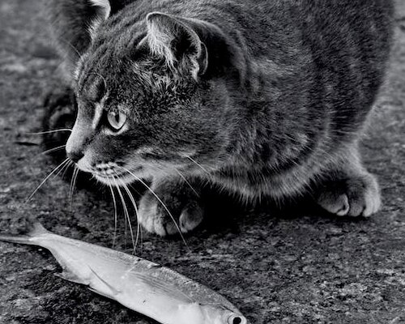
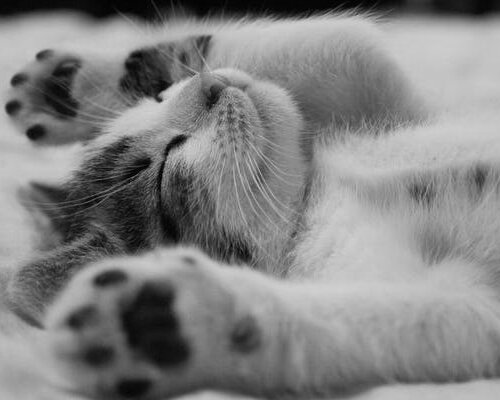
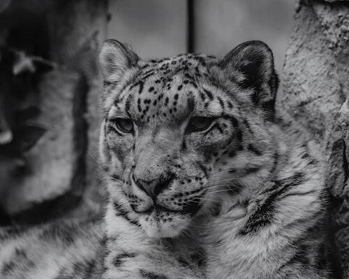
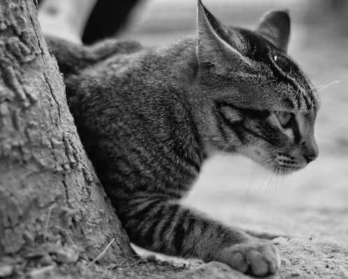
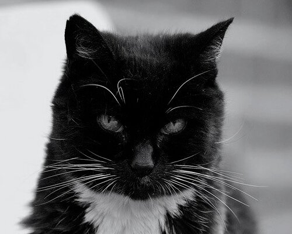
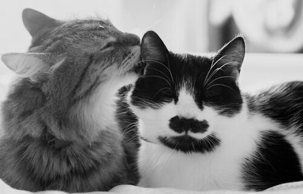

Mengejutkan, bukan? Ternyata kucing merupakan hewan mamalia yang tidak bisa mengenali rasa manis. Padahal setiap mamalia memiliki gen yang bisa menerima rasa manis, lho Grameds. Biasanya hewan mamalia memiliki reseptor di ujung sel perasa bernama T1R2 dan T1R3 untuk merasakan manis. Namun, sel perasa tersebut tidak berfungsi dengan baik pada kucing. Nah, itulah alasan mengapa kucing sebagai hewan mamalia tidak bisa merasakan manis.
Kucing kerap dijuluki sebagai hewan peliharaan pemalas. Grameds pasti lebih sering melihatnya tidur daripada bermain, bukan? Ya, kucing ternyata bisa menghabiskan waktu hanya untuk tidur selama 15-20 jam per hari. Wah, lama juga, ya. Mengapa kucing menghabiskan 70% hidupnya hanya untuk tidur? Kucing sebagai hewan predator kecil yang hidup di tengah-tengah manusia membutuhkan tenaga lebih untuk berburu. Tidur menjadi salah satu cara kucing untuk menyimpan energinya.
Kucing yang senang mengendus, mengintai, dan menerkam mangsanya ternyata memiliki gen 95,6% dengan harimau. Hal tersebut membuat perilaku kucing kurang lebih sama dengan harimau.
Dalam keadaan terancam, kucing rumahan yang kerap kita temui dapat berlari dengan sangat cepat. Kemampuan kucing dalam urusan kecepatan tak perlu diragukan lagi. Kucing berlari untuk menangkap hewan atau menghindar dari berbagai ancaman berbahaya yang akan menimpa dirinya.
Kucing sebagai mamalia crepuscular memiliki rata-rata umur antara 12-15 tahun. Seekor kucing di Austin, Texas, Amerika Serikat dinobatkan sebagai kucing tertua diduni yang hidup dengan umur 38 tahun lebih 3 hari. Kucing bernama Creme Puff ini tercatat di Guinnes World Records (GWR) hidup sejak tahun 1967 sampai 2005. Pemiliknya pasti merawat Creme Puff dengan sangat baik, ya. Rahasia umur panjang Creme Puff adalah mengonsumsi daging asap, telur, asparagus, dan brokoli.
Pernahkah Grameds melihat kucing memutar telinganya? Hewan peliharaan yang satu ini memiliki kemampuan memutar telinganya hingga 180°, lho Grameds. Kucing memiliki 32 jaringan otot yang dapat mengendalikan telinganya. Dengan otot sebanyak itu, kucing mampu menggerakkan telinganya tanpa menoleh sumber suara yang didengarnya.
